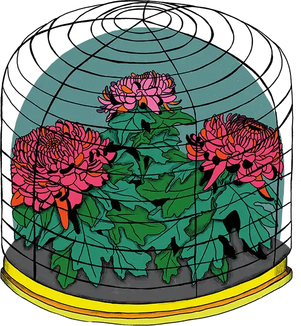
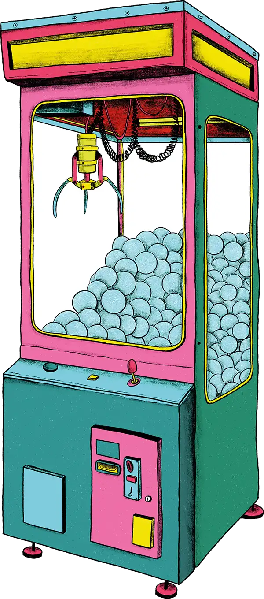
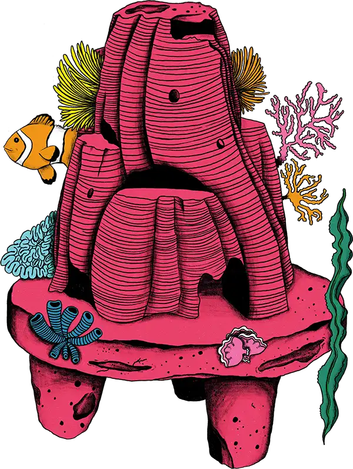
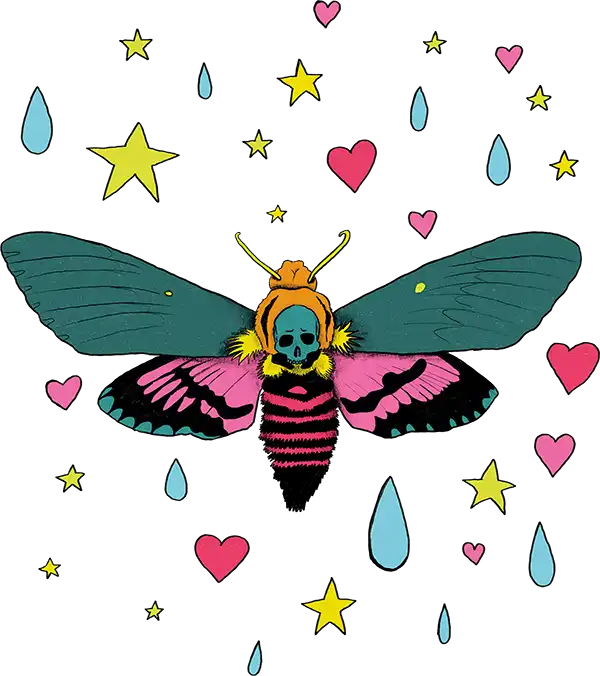
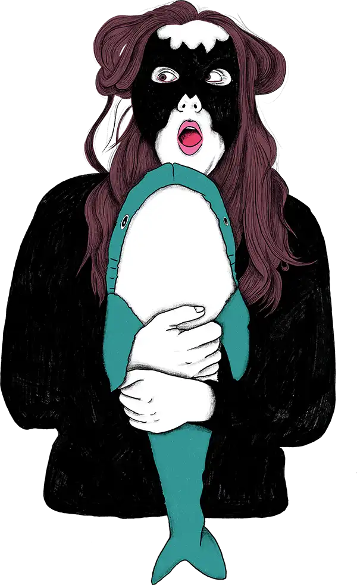
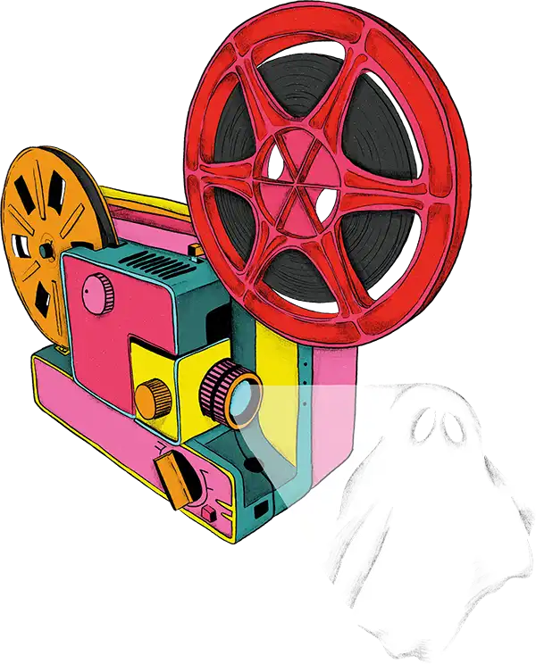
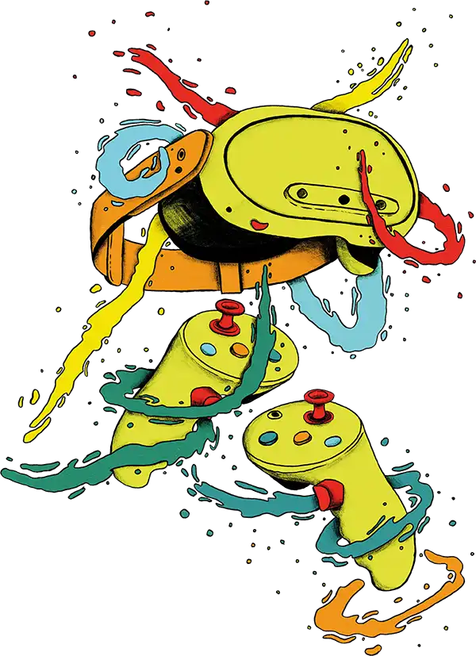
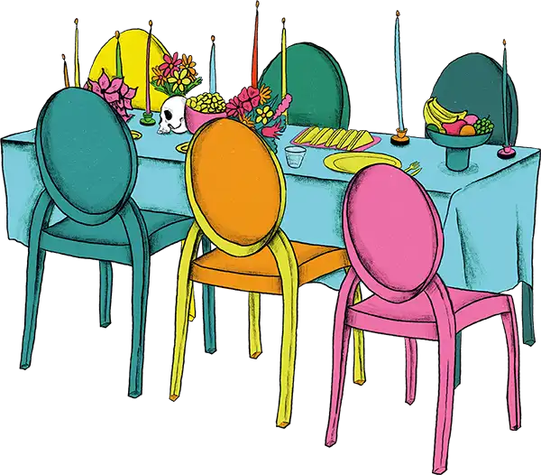
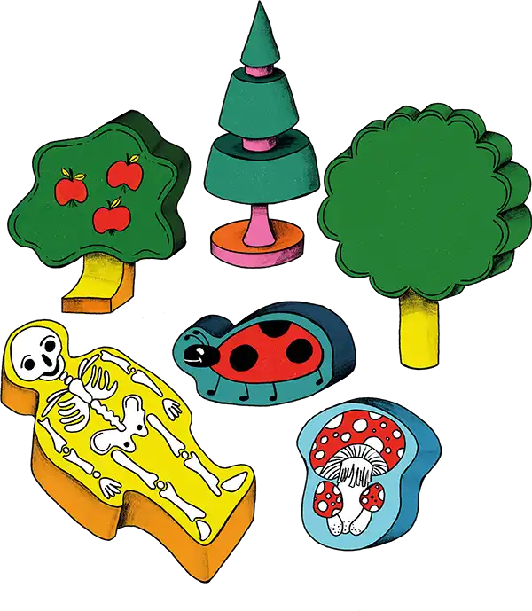
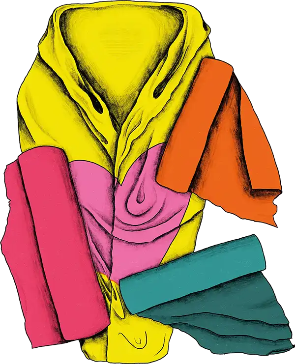

Afterlives Festival 2026
Introduction
The Afterlives Arts Festival is coming to a library near you — it's free, fun and open to absolutely everyone. Come and explore life's biggest questions through art, creativity and community.
Try a hands-on craft workshop, wander through a stunning art installation made by people just like you, watch a film, experience virtual reality, discover eco-friendly ways to be remembered, or simply sit, reflect and connect with your neighbours over a shared meal. There's something for all ages, from creative activities for curious kids to thought-provoking evening events for adults.
No experience necessary. Just come as you are.
- Newcastle Upon Tyne 8–9 May
- Exeter 15–17 May
- Redbridge 5–7 June
Immortelle Community Art Installation & Workshops

In Victorian times, people placed beautiful glass domes on graves, filled with precious objects, symbols and treasures to honour those they had lost. Now that tradition is coming back to life and we want you to be part of it.
Newcastle-based Moving Parts Arts has worked with local artists in Newcastle, London and Exeter to create three stunning new artworks inspired by this forgotten custom. These aren't just artworks to look at, they belong to you. Join one of our free community workshops to contribute your own icons, symbols and treasured objects to each piece, making every Immortelle a living portrait of its community.
Visit our Immortelle Domes at the exhibition on these dates:
- Newcastle City Library 4-9 May
- Exeter Library 15-24 May
- Redbridge Central Library 1-7 June
For the free workshop, pre-booking is required. All ages.
- Newcastle City Library 8–9 May
- Exeter Library 15, 17 May
- Redbridge Central Library 6–7 June
Pick an Afterlife Drop-In Creative Activity

What happens after we die? Have you ever wondered what different people around the world believe? Come and find out and make something amazing while you're at it!
Drop in and get creative as we explore afterlife ideas from different cultures and times throughout history, making your very own afterlife objects to take home. Feeling lucky, have a go on our claw grab machine and let fate pick YOUR afterlife. What will you get?
Visit our claw grab at the exhibition on these dates:
- Newcastle City Library 4-9 May
- Exeter Library 15-24 May
- Redbridge Central Library 1-7 June
Join our kids activities, free to drop in, on these dates. Best suited for ages 6+. Young children should come with a grown-up.
- Newcastle City Library 8–9 May
- Exeter Library 16–17 May
- Redbridge Central Library 6–7 June
Resting Reef Exhibition & Interactive Display

What if your final resting place could help bring the ocean back to life? Resting Reef creates living memorial reefs from cremated ashes, supporting marine biodiversity and giving loved ones a lasting, beautiful legacy beneath the waves.
Visit our exhibition display to explore and handle miniature reef models, learn about how memorial reefs work, and take a quiet moment to think about planning ahead. Share your ideas about future reef locations and imagine how these extraordinary memorial ecosystems might grow over time.
Visit our exhibition on these dates:
- Newcastle City Library 4-9 May
- Exeter Library 15-24 May
- Redbridge Central Library 1-7 June
Drop-in on these days to meet the team, free, all ages:
- Newcastle City Library 9th May
- Exeter Library 16th May
- Redbridge Central Library 6th June
Symbols of Death Exhibition & Workshop

What if we had a shared visual language for death, grief and dying — a set of symbols that could say the things words sometimes can't?
Symbols of Death is a thought-provoking exhibition by MOTH Design for Life & Death, a creative initiative exploring how graphic design can help us navigate end-of-life experiences. Beautiful vinyl artworks will adorn the library windows throughout the festival, and visitors to Exeter Library can also join a free hands-on workshop to explore the project further.
Visit Symbols of Death at the exhibition on these dates:
- Newcastle City Library 4-9 May
- Exeter Library 15-24 May
- Redbridge Central Library 1-7 June
Free workshop at Exeter, pre-booking required. No experience necessary.
Batman (Naomi's Death Show) Live Performance

Get ready for a show unlike anything you've seen before. Naomi Westerman — bestselling author, playwright and death acceptance activist — performs her award-winning interactive stage show.
This play takes audiences on a funny, surprising and deeply human journey through our collective fascination with death, true crime and the power of grieving together. Her book Happy Death Club was a bestseller across the UK, USA and Canada, and now she's bringing it live to your library.
Pre-booking required, low cost. Adults, some mature themes.
- Newcastle City Library 9th May
- Exeter Library 15th May
- Redbridge Central Library 5th June
Dead Good Film Club Screening & Discussion

Grab a seat for a specially curated film screening with a lively discussion about the things we don't always talk about: death, dying and what it all means.
Expect a brilliant film, fascinating conversation and fresh perspectives from people working across healthcare, funeral services, public services and the arts. The Dead Good Film Club has been sparking exactly these kinds of honest, entertaining and eye-opening conversations for years and we're bringing it to your library.
Pre-booking required, low cost. Adults.
- Newcastle City Library 9th May
- Exeter Library 15th May
- Redbridge Central Library 5th June
Soul Paint Drop-In VR Experience

When words aren't enough, how do you express what you're feeling inside? Soul Paint is a multi-award winning virtual reality experience that invites you to explore your own emotions in a way you've never tried before. Narrated by actress Rosario Dawson and backed by behavioural scientists and researchers, it asks you one simple but profound question: "Where are you feeling?"
Put on a headset and step into another world, painting directly onto a virtual body to bring your inner world to life. Whether you're carrying grief, curiosity or simply an open mind, Soul Paint offers a rare and beautiful space to explore feelings that are often hard to put into words.
Free. Drop in across the festival days. All ages.
- Newcastle City Library 8–9 May
- Exeter Library 16–17 May
- Redbridge Central Library 6–7 June
A Seat at the Table Reflective Lunch

What do food, memory and the people we've lost have in common? More than you might think. A Seat at the Table is a warm, relaxed lunch that brings people together around good food and gentle conversation, exploring themes of death, memory and belonging. Expect a simple shared meal, a little creativity and the kind of honest, meaningful chat that rarely happens anywhere else.
Pre-booking required, low cost. Lunch included. Adults.
- Newcastle City Library 9th May
- Exeter Library 17th May
- Redbridge Central Library 6th June
The Midnight Moth (Natural Burial Play Kits) Story & Workshop

Join us for a reading of The Midnight Moth, a beautiful new picture book that gently explores the natural cycle of life and death. Afterwards, children and their families are invited to take part in a gentle, creative workshop designing a simple, nature-based memorial ceremony for the Midnight Moth. Thoughtful, tender and lots of fun, this one is perfect for curious young minds and the grown-ups who love them.
Free. Drop-ins are limited in numbers so you can pre-book or reserve a place at the festival. Aimed at families with children aged 4–11.
- Newcastle City Library 8–9 May
Shroud Making Workshop

For thousands of years, simple cloth shrouds have been used to wrap our loved ones with care, dignity and love. As more people seek personal and gentle farewells, this quiet tradition is making a gentle comeback.
In this hands-on workshop you'll explore how textiles can hold memory and meaning through conversation, drawing, cutting and stitching. During this workshop you will reflect on grief, remembrance and how the act of making something with your hands can help us approach death and loss with tenderness. All materials provided. No sewing experience needed whatsoever.
Pre-booking required, free. No experience necessary. Adults.
- Redbridge Central Library 7th June
About
The Festival
Afterlives Arts Festival is a free, family-friendly arts festival coming to Newcastle City Library, Exeter Library and Redbridge Central Library in May and June 2026, supported by Arts Council England.
Brought to life by a nationwide collaboration of libraries, artists, academics and community partners, Afterlives transforms your local library into a vibrant creative hub, a place where art, storytelling and community come together to make conversations about death feel natural, joyful and deeply human.
Across 36 events and six festival days, people will have the chance to explore life's biggest questions through hands-on workshops, stunning installations, live performance, film, virtual reality and community art — all free or low cost, and open to absolutely everyone.
The Death Positive Libraries
Afterlives is the culmination of nearly a decade of pioneering work. In 2017, Redbridge Library Service became the UK's first Death Positive Library using books, art, film and community events to help local people engage openly with death and dying as a health and community issue.
Newcastle City Library joined the collaboration in 2019, extending this ground-breaking model from east London to the north east, and together the two services have won national awards for social innovation and health and wellbeing, inspired libraries across the UK and Northern Ireland to follow their lead, and reached hundreds of thousands of people with creative, compassionate programming around end-of-life choices.
The Death Positive Library movement is rooted in a simple but powerful belief: that libraries, as trusted, independent and genuinely open public spaces, are uniquely placed to hold these conversations, free from commercial interest, and open to everyone regardless of background, belief or experience.
Supported By